Humanizing the Brand with Frontline Workers and Growing LinkedIn Engagement 550%
Integrated Creative for QAD Redzone
Plants around the world run their frontline teams on QAD Redzone, a connected workforce platform whose tools deliver real-time productivity and compliance insight. The brand had room to grow past product features. Over three years I scaled Redzone's creative presence across web, video, print, and social, half of it facing customers and half facing the company's own people, and built all of it around the workers running the software.
THE PROBLEM
Manufacturing software tends to look as cold as the factory floor it serves, heavy on dashboards and distant from the people using it.
Redzone had a different story available. The results were there and so was the community impact, but the visual language had not caught up to either. The brand needed storytelling that put frontline workers on screen and a system that held together from one channel to the next.
THE SOLUTION
Leading with the people who used the software rebuilt how Redzone communicated. Campaign branding, social graphics, product explainers, physical activations, and original photography gave the frontline community a design system where they were the hero, and stat-driven banners and product overviews were held to the same standard: personal in tone, true to the energy on the floor.
LinkedIn engagement grew 550% (2% to 14%). Reels and YouTube reach tripled (20K to 60K).
Two hundred new web and intranet pages lifted traffic 33%, six-figure paid budgets turned into 1M+ ad interactions at twice the industry-average CTR, and lead generation rose 105% year over year, the work behind the 2024 Team Collaborator Award.
Simplifying Complex Features with Clean, On-Brand Visuals
Redzone's software is packed with capability, and none of it lands when it sits behind technical language and cluttered design. Competitors led with dense dashboards and cold UI screenshots that alienated more than they educated.
Starting with the tools manufacturing teams touched daily, I rebuilt how we explained them visually, so the work held up for existing users and for people meeting Redzone for the first time on our website or social channels. Branded feature graphics and light-motion assets blended interface mockups with messaging, and they lived in sales decks, on the website, in internal training, and across social.
The launch campaign for the Learning feature in the Redzone app on iPad and Apple TV grew out of this work. Workers on the plant floor were filmed using it to document repairs, and that footage became the selling point.
Hover to pause · Scroll to see more · Click to view closerSwipe to see more · Tap to view closer
Pushing Brand Voice and Visuals Through Creative Holiday Content
Holidays are filler for most software companies: a branded stock image with a timestamp. Seasonal moments were a chance to show that Redzone's voice could sound like the community the platform serves.
I led creative direction, scripting, design, and rollout across the holiday calendar, including New Year's reflections and April Fools' jokes. Tone shifted from one campaign to the next, and each turned a date on the calendar into a reason to talk with our community. Those posts became some of our highest-performing work, on and off the shop floor.
Hover to pause · Scroll to see more · Click to view closerSwipe to see more · Tap to view closer
Building Culture, Community, and Educational Content Through Everyday Design
Social media at Redzone was a place to celebrate people and share what they knew, and the content direction covered playful culture posts and education-driven infographics, aimed at internal teams and the wider frontline community alike.
The employee anniversary series ran as stylized monthly calendars with illustrations for the time of year, each one a small spotlight on the people behind the company. Infographics and carousels translated topics like frontline retention and productivity gains into visuals people saved and shared.
Inside the company, the same instinct built the one-stop employee intranet that held onboarding, training, and policy material, the promotion behind WISE, our employee resource group for women and allies, and the school volunteer days, GivingTuesday drives, and community cleanups that got people to sign up.
Hover to pause · Scroll to see more · Click to view closerSwipe to see more · Tap to view closer
Extending the Brand into the Real World with Physical Touchpoints
Branded experiences people could see, wear, hold, and remember pushed the creative into physical space. A creatively packaged iPad sent to a prospective customer. A jumbotron activation on the expo floor.
Each piece was made to feel human, start a conversation, and strengthen Redzone's presence in a form you could pick up and pass around.
Hover to pause · Scroll to see more · Click to view closerSwipe to see more · Tap to view closer
Amplifying Culture & Capability Through Video
Video made the product more approachable, the features more digestible, and the people behind the software more visible. I concepted, scripted, directed, and edited work ranging from step-by-step walkthroughs to the story of Women Inspiring Success and Empowerment (WISE).
The rule was the same each time: team members speaking directly to camera, laughter left in the edit, visuals that said our tech exists to serve real people doing real work. These videos ran across internal communications, social launches, and onboarding.
Supporting Visual Consistency Through Custom Brand Photography
When the moment called for it, I captured original photography for social and web, focused on people, process, and production. These images ran across campaign launches, blog posts, and internal assets and kept the brand's tone consistent with the push toward a more human identity.
Hover to pause · Scroll to see more · Click to view closerSwipe to see more · Tap to view closer